附篇2 《人类和动物的表情》的历史意义
·Appendix·
1．《人类和动物的表情》的创作经过
早在达尔文所著的《人类和动物的表情》这本书出版以前很久，不仅是科学家，而且是艺术家（首先是画家、雕刻家、演员），就已经注意到这本书里所讨论到的问题了。这几种艺术的卓越的代表者们，经常在致力于掌握那些用人的情绪所特有的外部表现来表达它们的艺术方法。他们特别注意到富于表情的动作和面部表情的极细微的差异，以便在画布上、在大理石与铜像上和在舞台表演方面把它们表达出来。优秀的演员始终知道手势、身体姿势和面部表情的秘密，并且用一种相似于人的情绪的外部表现的拟态去迷住观众。他们所依仗的本领，就是自己特别清楚地理解到表情的“法则”。这些“法则”照例是被经验方法所确立起来的，也是不成文的，只是由师父传授给徒弟，因此就成为演员技艺的秘密。
后来，从造型艺术和舞台艺术的专家们当中，渐渐地出现了一些人，他们不仅掌握了那种找出表达人类的各种情绪的极细微的差异，而且也掌握了充分的思考力，并且还能尝试说明他们在实践中所理解到的表情的“法则”。
人类的最卓越的天才之一莱奥纳多·达·芬奇，把完全掌握绘画艺术的方法去和敏锐的科学思考力与重大的专门知识（尤其是解剖学）结合在一起；他是第一批企图去解释那些为了在表情和身体动作里准确表现出各种不同的情绪而应当遵循的法则的人当中的一个。他的思考和十分惊人的推测，虽然都证明他具有很大的远见和观察力，但是并没有根据于严格的科学分析，因此也就不可能获得理论上的概括。
他在教授绘画艺术的时候，就讲述了一批法则；借助于这些法则，就可以在画布上面表现出那些在笑、哭和恐怖等时候所发生的动作来。例如，他提出了一种有关笑、哭的各种外部表现方面的很细致的观察。他写道：“一个在发笑的人，无论在眼睛，嘴部或者头颈方面，都和一个在哭泣的人毫无分别；双方的差别，只不过是在于：哭泣的人的双眉紧锁不动，而发笑的人的双眉向上扬起。除此以外，哭泣的人甚至也会同时用双手去撕破衣服和乱扯头发，并且用指甲抓破面部的皮肤；而发笑的人则不会去做这些动作”。其次，莱奥纳多·达·芬奇教导说，“哭泣的人并不和发笑的人做出同样的面部表情来，因为它们时常彼此相似，并且实际上应当辨别得出它们的差异来，正也好像是哭泣状态和发笑状态不同那样：要知道在哭泣时候，眉毛和嘴巴由于不同的哭泣原因而发生变化……” (1) 。
达尔文在这本书的绪论里，对他以前的研究家们的主要著作，作了宝贵的评述。虽然这篇评述绝不是充分的，但是在它里面反映出了那种表现在有关这个问题的文献方面的最主要的东西。根据达尔文的意见，应当认为，拉伐脱尔（Lavater）、贝尔（Bell）、杜庆（Duchenne）、格拉希奥莱（Gratiolet）、皮德利特（Piderit）和尤其是斯宾塞（Spencer）的著作是值得使人承认的。达尔文详细分析了这些科学家的观点，并且批判地评定了他们那些要建立情绪的外部表达法则的企图。达尔文认为，除了斯宾塞以外，这些人都没有用进化观点去考察表情的问题；达尔文曾经多次着重指出，只有进化观点才能使科学得到很大的收获。杜庆虽然没有创立出任何关于表情的理论来，但是达尔文对他的研究工作却作了极高的评价。杜庆首先利用电流刺激面部各种肌肉的办法，人工地复制出各种不同的表情动作来；达尔文认为他所用的复制方法是确定无疑的功绩。达尔文在现在这本书里，多次引证了他所藏有的、杜庆所亲切地提供出来的照片。
现在我们可以知道，在达尔文以前，还有一位科学家，他极其明确地定出了关于动物和人类的表情动作有共同起源的思想。可是，达尔文却没有知道这位科学家的研究工作，因此在现在这本书里没有提出他的姓名来。我们所指的这位科学家，就是伟大的俄国生理学家谢切诺夫（ ）。1866年，谢切诺夫出版了《神经系统生理学》（ ）；这是一个充满深刻的新思想的、卓越的独创的著作。谢切诺夫在这本书的后面一章里讲述到表情动作的分析方法。
谢切诺夫在这一章里写道：“大家知道，不仅是人的面部，而且是动物的面部，都能够受到感觉的影响。只要去察看狗的面部动作，就已经足够确信这一点了。在狗的面部，特别表现出了欢喜与悲哀、害怕与惊奇、愉快与痛苦、温柔与怨恨。的确，这些动作并没有像成年人的表情动作那样复杂，但是它们终究是相同的，而且当然谁也不会去怀疑到它们双方在神经与肌肉的活动方面的相同情形；不但这样，狗的表情动作在多样化方面并不比婴孩的同样的动作差一些，这些动作确实也像婴孩的动作一样，是在相同的条件下产生出来的。这种情况是极其重要的。它马上就表明出，动物和小孩的表情组合，属于一种天生的动作配合，完全和打喷嚏和呕吐等动作一样；第二，这种情况就可能使人从成年人的大量表情类型当中，分离出真正最简单的表情的配合来，甚至要是认为所有面部动作都是几种标准类型的变形，那么也就说不定会分离出基本的表情动作来 (2) 最后，它还可能使人去观察我们的动作在那些比较成年人的动作更加简单的条件下的发展情形。
正像每天的经验所表明的，这些条件实际上是极其简单的，并且可以简单说明如下：动物和小孩的表情动作，的确是在某种外来的感性刺激影响之下发生出来的，也就是在某一种器官受到影响以后发生出来的；换句话说，这些动作总是具有反射运动的特性。
可是，这并不是纯粹的反射运动，因为在它们里面，运动的形式受到感觉的品质的制约；因此，感觉的品质时常位于感性刺激和强制运动之间的中央。在那种由于视觉或者触觉所引起的呕吐情形里，我们就可以看到内容上有同样完善的例子。这种情形，在对于那种由于舌根受到刺激而引起的呕吐方面说来，可以被公正地称做是一种具有心理上的复杂化的反射运动；所以，最适当的是使动物和婴孩的面部的表情动作获得相同的名称。我甚至以为，现在对于这类现象方面，大概可以标明它们发生所经过的全部路线来。别烈秦（ ）发现，实际上，蛙的后肢的纯粹感觉神经的反射作用，只有在大脑两半球完整的条件下才可能发生下去；我们也已经看出，对于那些也是在感性刺激影响下发生的面部的表情动作方面，也必须具备大脑两半球完整的条件。因此，在这里，感性刺激也只有借助于大脑两半球，才能够转移到运动路线上去。
成年人的精神活动的发展条件，比起婴孩与动物更加多样而且复杂；就因为这一点，所以研究成年人的表情比较困难；不过在其余方面，则双方之间的差异就丝毫都没有了。各种不同的人对于同一品质的感觉方面的表情组合经常不变的情形，在这里也是充分的：那些只有成年人才具有的怀疑、轻视、讽刺的动作，以同样的肌肉的活动的配合，在所有的人的身上发生出来（对于这些情形当中的每一种而说）。因此，这些表情组合全都是天生的，而只有在婴孩身上由于缺乏相当的精神活动，它们方才没有进行活动的机会。其次，任何人都知道，成年人的表情动作的强制性，构成了他们的主要特性。最后，当然谁也不会去争论，在这里，运动虽然是带有一些热情的，但是也时常是首先在外来的明显确定的感性刺激的影响下发展起来的，而以后则大概就不再靠感性刺激而重现出来，例如在回忆时候重现出来。简单说来，在多数情况下，在成年人方面，也可以容易证明表情动作是由于反射作用而产生出来。从这个观点，就极容易去说明下面这种显著的心理上的激情的特性：在紧张的时候，它们不仅使相应的表情肌的收缩加剧起来，而且也会激起那些对精神生活毫无直接关系的器官的活动，例如会刺激呼吸机构、心脏和肠的运动管道等。实际上，谁都知道，在各种欢乐的兴奋时候，呼吸就加速起来，心脏的搏动也加强起来；而在很意外的大乐时候，情形就可以发展到心脏停止跳动（由于制动机构的兴奋）和昏厥。这些现象是和反射作用在刺激加强时候扩大与加强的情形有显著的类似。
因此，除了作为表情动作的基础的感性刺激不能确定的情形（就是不能够在实验心理学方面加以分析的情形）以外，应当把面部的各种表情动作看做是那种被精神要素所复杂化起来的反射作用的结果。 (3)
在这一章的末尾，谢切诺夫讲述到杜庆的著作，同时列出一张表；在这张表里举出18种不同的面部表情，相应于注意、考虑、深思、悲痛、怨恨、普通的哭泣、流泪的恸哭、欢乐、笑、讥笑、忧愁、轻视、惊奇、因惊恐而呆立、恐惧、大惊、一意的狂怒和满意这些状态；这些表情关连到面部的肌肉，而这些肌肉的收缩就引起了这些表情。
上面所举出的谢切诺夫的著作里的大段文字，是在达尔文所著的《人类和动物的表情》这本书出版以前6年和《人类起源》一书出版以前5年所发表的；这就证明了谢切诺夫善于根据理论见解，使表情动作这个问题获得相当明确的唯物主义解释，同时也具有进化学说的观点，因此就可以使人充分有据地认为，谢切诺夫的见解，也就是稍后达尔文所发展的那些在表情的分析中的进化思想的预见。
的确，谢切诺夫并没有收集到大量有关动物表情的实际资料，因此就不得不抱着叹惜的心情去认定科学家们没有注意到这个重大问题。达尔文也就是第一个使表情这个问题获得牢固的实际基础的研究家。他不仅从进化学说的立场上去解释表情，而且也利用了这种资料去加强这些立场，因为达尔文就把人类和动物在同样的或者相近的表情方法方面具有相似特点的情形，看做是人类起源于低等动物类型的证据之一。因此，达尔文对于表情这个问题的兴趣的来源就变得显明可见。达尔文所根据的见解是：如果能够成功地表明出人类的精神生活的不同的表现在低等动物身上有共同的根源，那么关于人类起源的学说就会争取到严整性和规律性。
达尔文早在自己对于孩子们的表情的第一批观察里（1838年），就已经根据于一个见解，就是：“甚至在这个最初时期，最错综的和最复杂的表情一定都有一个积渐的和自然的起源”（《达尔文自传》）。1840年，达尔文读过了贝尔所著的《表情的解剖学》（Anatomy and Philosophy of Expression ）；这本书对于这个问题更加有系统的研究方面起有补充的刺激作用，因为它激发达尔文要去驳倒贝尔的主要的思想之一的意图；当时贝尔肯定说，有些肌肉专门是为了要充当表情的手段而存在着（被创造出来）。我们也可以提出斯宾塞所著的书《心理学原理》（Principles of Psychology ）来说；在这本书里，用发展理论的观点来说明了表情这个问题。这种观点特别明显地表明在1872年出版的同书的第二版里；达尔文所著的人类和动物的表情这本书也正在这一年里出版。斯宾塞用专门的一章来讨论这个问题（第4卷，第4章）。他企图在这一章里，用更加有系统的形式来讲述他顺便对于这个问题所发表的见解《（心理学原理》，1855年第一版；还有《音乐的起源和影响》与《图解生理学》两书的概述）。在达尔文所著的现在这本书里，有一些在这个著作里的引用文字；从这些引用文字里可以看出，达尔文基本结合起了斯宾塞的见解，同时着重指出这位著者比其他的人具有更大的优点；这些优点就表现在斯宾塞企图用进化观点去解释心理学问题，而情绪问题也包括在内。达尔文没有看出，斯宾塞的进化论具有平凡、庸俗机械论的性质，并且用折中的方式去和精神物理学的平行论这种明显的唯心主义理论结合起来。
可是，到1867年，达尔文才有机会去偶然地做一些对于表情的观察，并且有时候记录自己对于这个问题的思考。在进行人类起源的研究著作的期间里，达尔文的注意力又再次集中到表情这个问题上来，同时他开始了有系统的收集实际资料的工作。他列出了一张专门的疑问表，并且把它分送给大批被他认为可以获得可靠事实的专家。他愈来愈经常地去请教各个正在对各种不同的动物和人类的表情进行一定的观察的通信者。他也愈来愈经常地在信件里把自己对于这个问题的意图和见解告诉朋友和同志们。达尔文的这些书信的遗产，正是研究所有以后各个阶段用的最宝贵的资料；达尔文在这方面的创造性的探求就通过了这些阶段，一直到它们最后形成了他的决心去写出这本专门著作《人类和动物的表情》来为止。
很使人有兴趣的是，在按照达尔文亲自所写的信（收集在《达尔文的生平和书信集》和多方书信集里），探索出他怎样一步步去收集他所需要的事实，以便论证那三个构成他的表情动作的起源理论的基础的原理。现在我们就来谈谈几封最重要的信。
达尔文在1858年阅读了斯宾塞的关于音乐的文章以后，曾经写信给他，讲述自己对于这个问题的观点，同时指出说，每种表情具有一定的生物学上的意义。后来，达尔文就在自己所著的书里发展了这个思想，并且使它成为自己的概念的指导思想之一。1860年，达尔文在写给莱伊尔的信里说，他已经收集了很多关于表情方面的事实，而且在最近他对这个问题作了很多的考虑。从同一封信里可以看出，早在1860年，达尔文已经开始采取明确的步骤，去收集有关不同人种的代表者们的表情的具体资料。他在写给莱伊尔的信里说：“顺便提出，前天我把大批关于表情的问题寄送到火地岛去了”。可以推测到，正是这些问题构成了这张问题表的主要部分；达尔文后来（在1867年）曾经把这张问题表分送给大批专家，并且也在《人类和动物的表情》这本书里完全列举出来。
1867年，当表情这个问题在达尔文的创作意图里占有牢固的地位时候，他把一批有关动物、小孩和不同人种的感觉表现的问题，寄送给阿沙·格莱（Asa Gray）、赫胥黎（Huxley）、米勒（F. Müller）和华莱士（Wallace），1868年，达尔文在写给巴乌孟（Bow-man）和唐得尔斯（Donders）的信里，谈到关于眼睛周围的肌肉收缩和流泪之间的联系问题，还有关于眉毛倾斜这种在痛苦时候特有的表情的问题。1870年夏季，达尔文在写给勤纳（Jenner）的信里，提出了关于鸟类羽毛蓬乱竖起的问题。他也对鸟类在饥饿和急躁时候的表情动作发生兴趣，因此他请求勤纳把这方面的事实告诉他。
在1870年末和1871年初，达尔文在写给伦敦动物园的主任巴尔特莱特（Bartlett）的信里，请求巴尔特莱特把关于两只狗在短距离内相遇时所特有的表情动作的记述送给他。当时他对于狗的双耳直竖和毛发蓬乱情形特别发生兴趣。他也请求巴尔特莱特去观察象、狼和胡狼等动物在兴奋状态时的情形。他请求巴尔特莱特告诉他，在猴子（Callithrix Stiureus ）哭泣的时候，它的眼睛周围的皮肤是不是也像小孩一样皱缩起来的。达尔文请求巴尔特莱特提出几个对于动物方面的实验，并且在动物身上引起一种人工规定的情绪表现。1871年，达尔文在写给吐尔纳（Turner）、奥格耳（Ogle）、唐得尔斯和埃利（Ery）的信里，讨论到人类在恐惧、惊奇、羞惭等情况下的情绪表现问题。
达尔文在著述了这本书以后，对于表情问题仍旧有浓厚的兴趣。1872年12月，他写信给唐得尔斯，要求马上就把一本关于表情的小册子邮寄给他；同时还请求答复关于生来就瞎眼的人的面部表情的问题。他请求唐得尔斯告诉他，瞎子怎样皱眉，瞎子在哭泣时候的表情是怎样的。1872年12月，达尔文在写给秋克（Tuke）的信里，认为自己有责任来承认，他如果事先能阅读到秋克所著的精神对身体的影响一书，他就一定会把自己的《人类和动物的表情》这本书里许多地方加以改写。1873年初，达尔文在写给华莱士的信里，表明自己不赞成华莱士对于达尔文的现在这本书里个别地方所提出的一些批判意见。最后，1874年，达尔文在写给拉爱特（Wright）的信里，响应拉爱特所发表的关于摇头是表示反对的动作的几个见解。达尔文对这些见解非常注意，因为它们建基于新的事实之上；这些事实表明，有些民族并不是用普通的头部动作来表示同意和反对的。达尔文写道：“你的来信将对我的论表情的新版本有很大的用处”。在达尔文的许多信里，显然表明他对于人类和动物的表情这本书的创作的整个发展过程。在这些信里，特别清楚地反映出了一种方法；达尔文就靠了这种方法，去收集他所需要的事实，在这些事实的基础上建立起理论概括来，提出明确的假设，靠了有经验的专家们的帮助去精密核对这些假设，同时逐渐地定出一个宝贵的客观的原理，使他可以在自己的科学结论里完全根据于这个原理。
2．达尔文关于表情的学说的基本原理
前面已经指出，达尔文在对小孩表情开始进行第一批观察时（1838年），曾经用下面一种说法来作为指南：情绪生活受到进化法则的支配。可是，他绝不敢大胆先把这种说法去构成一种科学理论，除非是事实的逻辑来推进到这方面去。当时达尔文所拥有的这些事实还是很少，因此他就规定自己的首要目的是要增加观察的次数。在达尔文的观察过程和分类里，愈来愈清楚地显现出明确的理论解释来；这种解释逐渐地获得了那些概括的性质，这些概括高于局部的事实，而且可以去说明很多好像彼此毫无关系的现象。例如，形成了一些观念，这些观念后来就使达尔文能够定出三个构成《人类和动物的表情》这本书里的理论核心的基本原理。
我们并不拥有准确的资料，去确定在达尔文的这三个原理当中，究竟哪一个原理的观念最先被他想出来。只可以这样来推测说，他的理论思想首先遇到了那种要去说明最多数的一类事实的必然性，因此使达尔文去确立了第一原理，就是有用的联合性习惯原理（The principle of serviceable associated habits）。这个推测是根据达尔文所举出的三个例子的分析而来；这些例子是根据最接近进化学说的要点，而用来论证第一个原理的。很有意味的是：在过去的文献里，正就是这个原理遇到了最少的反驳，并且使多数批评家认为是已经有可靠的事实和逻辑的论证来最坚强地证实了的。
达尔文用来辩护第一原理的证据的有力方面，就在于：他以为，表情这个问题的历史观点和生物学解释，是和它的生理学分析的企图结合在一起的。达尔文在发展有用的联合性习惯这个观点时候，就在联合性习惯的发生机制的生理学分析方面找到了一部分支持；从现代的看法说来，这种习惯就是一种用条件反射来经常补充最复杂的无条件反射的现象。可以认为，第一个原理因为拥有数目最显著的表情动作，所以按照它的意义看来，在达尔文的全部这本书里占有了总的思想地位。
达尔文认为，现在所观察到的那些很可以作为各种不同情绪的特征的表情动作，正就是情绪和情感表现双方的遗传性联合的产物。这些联合曾经在动物的生活过程里被获得；同时它们如果对动物有用，那么也就会巩固起来，并且开始成为有用的联合性习惯，而遗传地传递下去。达尔文多次重复提到这个问题，并且总是经常从这方面来解决它。
可以恰当地着重指出，米丘林生物科学（它的基本原理之一就是获得性状的遗传学说）就在达尔文这本关于表情的书里所含有的很丰富的事实当中，找到了重要的补充资料。
达尔文的第二个原理——对立原理（The principle of Antithesis）——的观念，大概是紧随着他亲自明确地定出了第一个原理以后就产生出来的。达尔文发现，还有很多表情动作，却不能够根据有用的联合性习惯原理去解释它们。在它们当中，首先就有一批在情绪方面所特有的表情动作，正和那些在第一个原理里面已经获得解释的表情动作互相对立（例如：悲哀——欢乐；敌视——友爱等等）。
这类情绪所特有的表情动作的分析，使达尔文发生一种思想，认为应当再有一个表情的原理存在着；它好像是补充有用的联合性习惯原理的。达尔文就把这个原理叫做对立原理。在研读这本书的时候，就不难看出，达尔文所举出的有利于这个第二原理的证据，具有较不详尽和较不可靠的性质。达尔文时常只是满足于一种在外部表现上对立的动作在对立情绪下发生的事实检定方面。
最后，达尔文不得不又再遭遇到大量表情动作，而且认为无论第一个原理或者第二个原理都不能够去满意地说明它们。达尔文首先把所有关于人类和动物在兴奋状态下所发生的狂热的表情的情形，归进到这一类里面去。他注意到这样一种事实，就是在差不多任何情绪达到高度紧张的时候，它就在外表上表现得异常强烈和多样化：身体发抖、有很多的姿势、不能自制和有各种不同的运动反应出现；更加不必去谈到多种多样的身体内部的过程——血液循环、呼吸作用、出汗——强烈变化的情形了。达尔文就偏爱采用第三原理——神经系统一般刺激的直接影响原理 (4) ——去说明所有这一类情形。
应当指出，达尔文利用了一般的概念“身体内部的过程”，并没有像现代的办法那样把这些过程细分开来。他所记述的事实，表征出那些和各种不同的情绪联结的神经系统的总体反应。在达尔文的时代，关于神经系统的学说还刚开始发展起来。当时还完全没有研究出一章关于大脑皮质在植物性神经系统的机能方面的调节作用的内容来。因此，我们一点也不用奇怪，达尔文把各种极不相同的现象合并在同一类里，把它们构成第三个原理的基础。达尔文在论证这个表情的第三个原理时候，显著地根据斯宾塞的著作；斯宾塞当时曾经去分析这一类表情动作，并且提出了一种极其相似达尔文的第三个原理的理论说明，去解释这些动作。
顺便可以指出，达尔文曾经多次同时采取两个或者三个已经说明的原理，在解释一定的情绪和这种情绪所特有的外部表现之间的联系。
从《人类和动物的表情》这本书的第四章开始，达尔文举出了很多例子，来证明他所提出的三个原理正确无误。全部广泛的实际资料是依照下面的次序来讲述的：起初描写动物所特有的表情方法（第四章和第五章）；此后，达尔文就转移到人类所特有的表情的叙述方面（第六章到第十三章），同时特别注意到婴孩时期，就是最初显露和表现出正是那些情绪生活方面的期间；这些情绪生活最清楚地表明出人类和他的动物祖先的相似来。这8章都是记述和分析人类的差不多全部的情绪，从最简单的情绪开始，一直到最复杂的情绪为止。在全部这几章里，我们所遇见到的已经不是新的、原则上重要的观念，而是使我们十分惊奇地看到了：实际资料十分丰富，达尔文所采取的这些资料的来源是多方面的，观察特别细致，而且在叙述各种不同情绪表达的几乎难辨的细微差异方面具有最高度的艺术性。
在这本书的最后一章（第十四章）里，达尔文又回头讲述到全书所根据的这三个原理，并且在做总结的时候，略微谈到了几个具有原则上的意义的新问题：关于表情的本能上的认识，关于人种的种的统一，关于模仿的作用等问题。
这就是现在这本书的基本内容，而且也是达尔文所卫护的主要观念。
3．对《人类和动物的表情》这本书的批判
自从达尔文所著的《人类和动物的表情》这本书出版以来，到现在已经有80年了。在这一段期间里，显示出了自然科学的旺盛发展。有一批关于表情动作的书籍发表出来。也有新的理论产生出来；这些理论的发表者们企图用另外的观点去考察达尔文所提出的问题，并且对达尔文的基本立场作了批判性的评价。
开头应当指出，在达尔文的这本书出版以后所发表的而且对它作过批判的很多著作里，却极少对这本书的实际资料发生争辩。不但这样，无论哪一篇关于这本书的评述文字，总是都着重指出了达尔文所提出的实际资料丰富，他具有特殊的观察力，他的叙述很准确。不仅是那些对这本书表示好感的人，而且是那些认为这本书好像是不值得重视的和没有科学价值的人，都承认这一点。
要是达尔文的这本书单单是由一批事实所构成，而并不含有任何理论上的概括，那么按照一般的承认，它仍旧具有特殊的价值，并且会长期保存着唯一独特的关于这个问题的著作的意义了。可是，直到现在为止，在文献里还没有过任何其他的一本书，而它也以动物和人类的表情动作的起源这个问题来作为自己的对象，并且会有达尔文所做的那样详尽地去考察情绪起源的问题。可以认为，只有一本书是写到这个主题的；这正就是达尔文本人所写的书。虽然已经有几百个关于情绪问题的著作发表出来，但是在它们当中，却并没有像达尔文所提出和研讨的情形那样，采用进化观点和广泛的生物学观点，来整个地提出和研讨这个问题。显然可知，这方面的科学思想所以有这样缓慢发展的原因，应该就在于：为了要去理解表情动作的发生和发展的法则，就必须具备许多在科学方面可靠的事实；而且为了要达到这个目的，就应当拥有对于这些综合问题的科学研究方面的良好的研究方法，而这些问题同时是属于生物学、生理学和心理学方面的。后来，巴甫洛夫创立了条件反射学说，并且发现了高级神经活动的新的研究方法；可是在他的经典著作还没有发表以前，就根本谈不到那种和达尔文所提出的表情这个问题有关的知识部门的创造性发展。巴甫洛夫学说对这个问题的解决方面提出了正确的启示；而且可以期望到，不久以后，当这门已经在不同知识部门里获得良好成果的巴甫洛夫生理学繁荣起来的时候，也就可以去说明那些还没有揭露的、关于情绪生活和它的外部表现互相统一的法则来。
达尔文的这本书激起了不少的批评；有一部分批评是善意的，也有一部分是敌意的，而主要是由于这些批评的发表者们是分属于达尔文主义或者反达尔文主义的阵营方面的。
在第一批对达尔文的《人类和动物的表情》这本书的评论文章当中，应当提出下面三篇对它不利的批评文章：一篇是在这本书一出版后立刻就发表在英国的杂志《阿脱努姆》（Atteneum ）上的，第二篇在1872年12月13日发表在《泰晤士报》（Times ）上的，第三篇则是在1873年4月发表在《爱丁堡评论》杂志（Edingburgh-Review ）上的。1873年1月，华莱士在《科学季刊》（Quartly Journal of Science ）上发表了一篇详细评论达尔文的《人类和动物的表情》这本书的文章。华莱士在一部分问题上和达尔文进行了论争（上面已经提到关于他们的不同意见），同时对这个著作整个提出了高度的肯定的评价，而且强调说，在达尔文的这本书里，最清楚地表现出了“著者的思考的特征”。
在第一批对于《人类和动物的表情》的批判文章当中，应当指出英国心理学家亚历山大·培恩（Alexander Bain）的文章来。这个作者特别注意到那些被达尔文认为是由于神经系统的极度刺激而出现的动作的起源问题（达尔文的第三个原理）。作为唯心主义者的培恩，就认为这一类动作是“自然发生”的，就是能够在缺乏刺激时候完成动作；可是，达尔文在自己的最后的反驳文章里，却坚决不同意这种说法。培恩不愿意把这些动作看做是表情动作，因为根据他的意见，除了体力的过剩以外，它们几乎没有表现出什么来。后来，培恩出版了自己的书《感觉和智力》（The Senses and the Intellect ） (5) 的新版本，却在它的附录里极其不恰当地企图去批判达尔文的《人类和动物的表情》这本书。
一般说来，达尔文的这个新的完全独创的著作，在它出版以后的第一年里，并没有引起西欧和美国的科学界的热烈反应。可是，在以后的年份里，《人类和动物的表情》这本书就多次成为研究的对象，并且愈来愈吸引了各个不同的知识部门的专家们的注意力，特别是引起了心理学家们的注意。
应当指出意大利科学家孟特加查（Mantegazza）所著的书《生理学和感情的表现》（ ，1885年）来。孟特加查提供了这个问题的极其详细的历史和各种著者所收集的实际资料的报道，讲述了达尔文的表情学说，对达尔文的这本书的实际方面作了高度的好评，并且认为在这本书里含有真正的发现。同时，孟特加查在着重指出达尔文的第一个原理的意义时候，整个反驳了达尔文所提出的三个原理，而且另外提出两个原理来代替它们，就是：（1）存在着有用的表情，或者“防卫的”表情；（2）存在着“同情的”表情，就是一种对其他人表示同情感的表情。容易看出，孟特加查的分类就是已知事实的简单的检定，而达尔文所提出的原理则是科学史上第一个要从进化理论的立场上来揭露出动物和人类的各种情绪的起源的企图。
心理学科目的代表者们对达尔文的这本书提出了最多的批评；这种情况是不应当使人惊奇的。虽然在《人类和动物的表情》这本书里谈及到那些早已对自然科学家——生物学家、生理学家和心理学家是重要的问题，但是这本书的基本的主题路线到底是最接近于心理学方面的。因此，也就有一切的理由，去首先把《人类和动物的表情》这本书看做是心理学的研究著作（从这个字的严格的意义说来）。达尔文说不定企图要用这本书去实现他在《物种起源》的结论部分里所发表的希望，就是：将来要开辟心理学方面的新的重要的研究场地；心理学将牢固地安放在进化理论的基础上面。
作为一个唯物主义自然科学家的达尔文，能够看出心理学在研究精神现象的起源和发展史方面的主要意义；无论这些现象有多么复杂，都能办到。达尔文虽然不知道谢切诺夫，却在这方面遵循了这位卓越的俄国生理学家当时所宣传的一个原理，就是后者认为，心理学的对象是由于一种要首先去认识心理现象的起源的必然性而产生的。谢切诺夫对这方面写道：“科学的心理学按照本身的全部内容说来，绝不会和很多关于精神活动的起源的学说有任何的不同。” (6) 达尔文的这本书正也是满足了这个要求，因此它也在进步的心理学家们当中获得了最热烈的响应。生物学家们并没有去对这本书作详细的研讨或者批评分析，而只限于作了一般的、常常是高度肯定的评价。季米里亚捷夫在这方面所发表的意见是很有意味的：“关于人类这本书里的一章，被展开成为整个单独的一卷——人类和动物的表情；这是他的关于全部生物统一的一般学说的最机敏的发展之一，依据于面部等在各种不同的精神活动下的表情这些好像是微小的事实。” (7)
从心理科学的代表者们对达尔文这本书所提出的很多批评文章当中，我们可以举出三位作者的意见来；他们对达尔文的主张作了最详细的研讨；这就是法国心理学家利波（ ）、德国心理学家冯德（ ）和美国心理学家波耳杜英（ ）。
利波在自己所著的书《感情的心理学》（
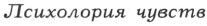
，1896年，俄文译本在1897年的版本）里，用专门的一章来讲述关于情绪的外部表现的问题。利波在简略地讲述了这个问题的历史和指出了拉伐脱尔、贝尔和特别是杜庆的著作的意义以后，就写道：“最后，达尔文的划时代的著作出版了。达尔文根据于长期研究的结果（这些研究扩展到成年人、小孩、精神不正常的人、动物、各种不同的人种方面），第一个彻底提出了一个问题：某一种情绪为什么和怎样会和某一种动作联系起来，而不是和另一种动作联系起来？他设法要去回答这个问题，而且从此以后，这个问题就被安放在科学的基础上了”。利波作出结论说，应当承认，达尔文的第一个原理，就是有用的联合性习惯原理，是最确实可靠的。根据利波的意见，达尔文的第二个原理——对立原理——可以认为是要坚决拒绝的。至于说到第三个原理，那么根据利波的意见，从它的本身意上说来，它不可能被提出来和前面两个原理并列在一起，因为在它里面包括更加广大的综合观念。实际上，它很接近于第一个原理。冯德是唯心主义心理学家，明显拥护精神生理学的平行论的反动理论的人，也是多卷《生理心理学基础》（
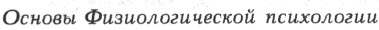
）的著者；他提出了自己的感觉理论，并且使表情问题在这个理论里占有显著的地位。冯德爱好用三个原理，去说明那些随着各种不同的情绪而出现的一定的表情动作的起源。在这三个原理当中，第一个原理是神经分布的直接变化原理（ ）；由于这种变化，好像存在着肌肉活动的强度对于情绪强度的一定的依存关系。实际上，这个原理是和达尔文的第三个原理互相符合的，不过被他按照他的本身意义而放置在第一个地位上罢了。他的第二个原理的出发点就在于承认下面的事实：任何一种精神状况的外部表现，都取决于这种状况和某些感性印象的互相一致。因此，根据冯德的意见，满意或者痛苦这些被纯粹生理上的原因所制约的表情方法，当精神上的原因出现而来代替生理上的原因时候，就显出是彼此相合的。实际上，这第二个原理和达尔文的第一个原理没有多大差异，因为双方的基础都是观念联合法则（ ）。最后，冯德的第三个原理就根据于下面的事实：即使在那些引起肌肉活动的实在对象的地位上放置一些相当于情绪的想象的、刺激的对象，那么这些活动也能够暴露出一种类似表现的准备来。 (8) 虽然利波对冯德的主张要比对达尔文的主张更加偏爱些，但是正义要求大家承认，冯德的观念却并没有和达尔文的基本思想有重大的差异。冯德在基本上用自己的话来转述了达尔文的说法，但是同时却抛弃了达尔文的最宝贵的部分，就是他对这个问题的历史的、唯物主义的看法，把它去和反历史的唯心主义主张对立起来。波耳杜英在自己的那本根据唯心主义和庸俗进化论的原理而写成的书《儿童个体的精神发展》（
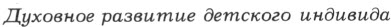
，1895年）里，由于受到事实的压力，不得不去承认达尔文的有用的联合性习惯原理具有重大意义，并且指出：“达尔文亲自详细地研究了各种不同的本能表现，而且不容争辩地证明了它们大多数是为生命而斗争、自卫和扩展方面的原始的有用的反应类型”。上面所举出的三个著作，绝没有全部包括进西欧和美国的心理学家对于达尔文的这本书所写的一切意见。可是，在这三位著者所写的批评意见里，特别提出了整个一批问题，成为资产阶级心理学专家们在批评达尔文的这本书时候的讨论主题。不能不指出，西欧和美国的科学家们关于表情这个问题方面的著作，都没有提出过任何重大的新观念，而只不过是限于那种和达尔文原理类似的见解以及那些想把达尔文的唯物主义见解和各种各样的唯心主义主张调和起来的企图。
达尔文关于情绪方面的观念在俄国科学界里获得了完全不同的接待；俄国科学界由于自己的卓越的代表们的努力而批判地和创造性地研讨了这个问题。
使人值得注意的是：俄国读者们也能够和那些直接阅看英文原本的读者们同时看到达尔文所著的《人类和动物的表情》这本书。当达尔文在校对这本书的校样时候，科瓦列夫斯基（
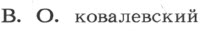
）就从达尔文那里取得了一份已经订正的校样，于是马上就和谢切诺夫的妻子波各娃（ ）一同把它翻译成为俄文。因此，这本书的俄文译本，也就和英文原本在同年（1872年）出版。可是，在俄国出版界方面，则没有马上出现对这本书的批判文字。著名的俄国解剖学家列斯加夫特（
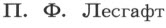
），就是第一批对这本书提出批评的人之一。1880年，在自然科学家、人类学与人文学爱好者协会在莫斯科大学里的集会上，他作了一个报告；这个报告的题目是：论表情和那些围绕高级感觉器官的肌肉活动两者间的发生上的联系（ ）。列斯加夫特在提出杜庆和格拉希奥莱的著作而作了历史简述以后，就转到叙述和批评达尔文的这本书方面来。列夫加斯特的这个报告的基本内容，是从他对面部肌肉的解剖学上的见解里产生出来的，因为这些肌肉对于表情动作起作用。列夫加斯特认为表情肌的先天特征和它们所特有的动作较不重要，而认为生活条件和教养因素起着决定的作用。列斯加夫特爱好把那些主要是面部表情所实现的表情动作的发展，去和个体发展的历史与这种发展所通过的条件联结起来，而且主要是去和人类所进行的活动的性质联系起来。他所根据的说法，就是：“任何的印象、感觉必定转变成为动作，这种动作应当或者是用智力活动表现出来，或者是用肌肉收缩表现出来”。那些曾经作为列斯加夫特的观察对象的新生婴孩的表情动作，使他相信周围环境对它们起有重大的影响。婴孩所获得的经验和他的发育与教养的条件，比起遗传特征，大都更加能够决定表情动作的性质。列斯加夫特根据许多可以作为表情的特征的例子，去说明自己的报告里的这个基本观念。根据列斯加夫特的想法，肌肉机构能够产生极多的各种不同的动作，但是这些动作的一种加强而且获得牢固的表情动作的性质的实际配合，是由发育和教养的条件来决定的。
因此，我们可以看出，列斯加夫特在自己的报告里接触到了达尔文学说的核心本身，并且企图把达尔文的原理去和自己独创的表情动作的起源的解释对立起来。应当承认，我们可以发现，在列斯加夫特的主张里，含有达尔文学说的创造性的加工；从理论方面说来，这种加工比起外国心理学家们（就是上面已经考察过他们的著作的那些人）所作的一些修正说法，更加要宝贵得多。虽然列斯加夫特对于表情动作的起源和对于这些动作依存于周围条件与教养的观点具有一定的进步性，但是在它们里面终究还是遗漏了达尔文所提出的一个问题；达尔文为了要解决这个问题而顽强地耗用了他的富于研究的思考力。这就是一个关于表情动作在精神活动的进化里的地位的问题。
对于这个问题的历史，可以很有趣味地指出，我们发现，在俄国境内，最初对达尔文的这本书的批评文章之一，是唯心主义心理学家乌拉季斯拉甫列夫（ ）所发表的。1881年，乌拉季斯拉甫列夫在他所出版的两卷集《心理学》（
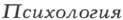
）的第二卷里，专门对达尔文的著作《人类和动物的表情》进行了批判。乌拉季斯拉甫列夫在讲述了达尔文关于表情动作的学说的要点以后，就着重指出说，这本书“不能被每个负有说明身体感觉的表现的任务的研究家忽视”。乌拉季斯拉甫列夫认为，在和所有过去探讨这个问题的著作来比较的时候，达尔文的这本书按照它的本身意义说来是巨大的著作，是根据大量事实的精密收集和研究而产生出来的。根据乌拉季斯拉甫列夫的意见，达尔文的这本书的缺点所以发生，就在于达尔文忽略了表情的自由动作，他对情绪发展的观念的不正确。可是，乌拉季斯拉甫列夫在对不同的表情方法来作出自己的解释时候，却自己不知不觉地实际上依从了达尔文的解释，尤其是在他用观念联合法则去说明表情动作的发生情形时候更加显明。这一点更加显得重要，因为乌拉季斯拉甫列夫自己的立场可以表征出是唯意志论这一派的唯心主义者们的立场；这一派人虚假地提出了关于情绪和它们的外部表现之间的联系的问题本身。也应当提出俄国神经病理学家米诺尔（Л. ）的文章“论神经病与精神病中的面貌变化”（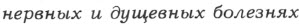
，登载在1893年出版的《哲学与心理学问题》杂志里）。米诺尔所收集到的事实，对达尔文的这本书的几个部分作了补充说明；达尔文在这几个部分里，企图用那些属于精神病患者的表情动作的资料来证实他所提出的三个原理正确无误。米诺尔引证了达尔文的著作，把它看做是表情动作的研究工作的经典性榜样，并且作出结论说，在精神病患者的表情里，感性的知觉和观念起有重大的作用。米诺尔在自己的著作里还指出了一种探求情绪和它们的外部表现之间的联系的可能性。他注意到那种催眠和提示的方法，他曾经为了研究表情动作而应用这个方法去进行实验。最后，应当指出沃罗比耶夫（ ）的一篇叫做“表情动作的分类”的文章（
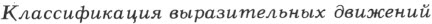
，登载在1897年出版的《哲学与心理学问题》杂志里）。这位作者详细分析了达尔文的学说，对他的特殊的观察力作了赞扬，并且基本上和他的见解结合在一起，但是着重指出，达尔文的错误就在于把智力活动方面所特有的表情动作去和情绪方面所特有的表情动作混杂在一起了。他认为，达尔文在研究表情方面比所有其他的人做得更多，因此“我们应当把这个奠定表情的动作在发生上的研究基础的功劳归属于他”。4．从巴甫洛夫生理学观点来看达尔文关于表情的学说
在俄国的有关表情动作这个问题的创造性研讨方面的科学文献里，最卓越的精神病学家和神经病理学家别赫切列夫（
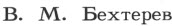
）的著作占有特殊的地位。在1883—1884年里，在医学周刊《医师报》上，别赫切列夫发表了一个实验工作，这个工作的目的主要是去查明表情动作的局部性现象。别赫切列夫对动物进行了实验，把这些动物的脑子的各个不同部分摘除或者加以刺激，同时去观察动物所特有的那些表情动作的变化情形。别赫切列夫就根据这些试验来得出结论说，表情动作（或者根据别赫切列夫所称呼它们的说法，是“表现的动作”， ），对神经结节的机能有明确的关系，就是对中脑有关系。后来，别赫切列夫把这个资料包括进自己的多卷著作《集脑的机能学说基础》（
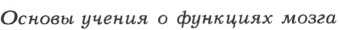
，在1906年出版过这个著作集的第七版）。发出声调的机能也包括在别赫切列夫所研究的表情动作里面。别赫切列夫企图把那些从某些表情动作方面所观察到的变化细致地区分开来；这些表情动作就是张牙、尖叫、吠叫、毛发蓬乱竖起，尾巴直竖等，对刺激或者摘除中脑的各个不同部分有依存关系。斯烈兹湼夫斯基（ ）的医学博士的学位论文值得受到更大的注意；他是别赫切列夫院士的心理实验所的共同工作者（使人感到兴趣的是，巴甫洛夫就是这个实验所的监察人之一）。这篇学位论文讲述到恐惧方面的问题，并且在它里面把那些和各种不同的情绪有关的表情动作的分析列进到特殊的地位。这位作者详细地讲述到达尔文的《人类和动物的表情》这本书，并且评论了达尔文的这本书里的几页有关恐惧感情的外部表现方面的文字，认为对于这个问题所写述的内容很好。这位作者在构成这个著作的实验部分时候，就以达尔文的这本书里的基本原理作为根据，尤其是以他第一个原理（就是有用的联合性习惯原理）作为根据。
从那些起源于巴甫洛夫学说的现代观念说来，别赫切列夫和他的学生们所收集到的和分析过的事实，具有另外一种解释。为了说明它们起见，就必须时常去记住，所有位在大脑两半球的皮质下面的脑子各部分，都受到皮质的调节作用的影响。因此，对情绪和那些伴随它们而出现的表情动作，就不可能用简化易懂的定位学说（ ）的观点去考察；特别是如果注意到人类这种特殊生物的情绪生活的品质的特殊性和复杂性，那么更加不可能去这样办了。
现在已经可以认为，脑子的皮质活动和皮质下活动对于情绪的发生和发展方面所起的作用这个基本问题被充分地查明了。根据巴甫洛夫的意见，“为了保存个体和种族，有机体与外在环境间的极其复杂的相互关系，首先是由与大脑两半球最相近的皮质下的活动所制约的”； (9) 这个事实使那种硬认为人类感情具有特殊的皮质下的本性的说法失去了根据地。巴甫洛夫在自己的文章“大脑的高级部分的动力定型”（
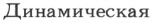
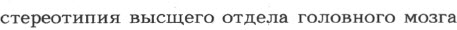
）里写道：“我以为，有足够的理由可以认为，上面所讲到的大脑两半球的生理过程［皮质内部的过程的定型的确立］符合于那一种情形，我们主观地亲自把这种情形叫做感觉；这些感觉成为肯定的和否定的感觉的一般类型，并且或者由于它们的配合，或者由于不同的紧张程度，而成为大批细微差异和变形。”根据巴甫洛夫的意见，人体在受到不同的重大刺激时候所体验到的严重感觉，“正就是在旧有的动力定型发生变化和遭到破坏方面，和在新的动力定型的建立发生困难方面，显著地具有自己的生理上的基础”。因此，人的特种的情绪具有显著的皮质的性质，而皮质下则只不过是“有机体和周围环境的复杂的相互关系方面的第一阶段”。 (10)巴甫洛夫写道：“高级神经活动是由大脑两半球和最接近的皮质下的结节的活动所形成的，就是中枢神经系统的这两个最重要的部分的联合活动。这些皮质下的结节就是……最重要的无条件反射或者本能的中心（例如吃食的、自卫的和性的本能等的中心），因此也就是动物体的基本意图、最主要的倾向。在皮质下中枢里，包含有机体的基本的外部生活能力的总量。从生理学的观点看来，皮质下中枢特有着惰性，无论是在刺激作用方面或者制止作用方面都是这样”。巴甫洛夫举出了一个被摘除大脑两半球的狗的例子；这只狗因此不能应答大批外来的刺激物，同时也不能够去对多次重复的刺激物作反射性制止。于是，巴甫洛夫就定出一个关于皮质和皮质下互相联系的结论道：“大脑两半球的皮质对于皮质下方面所起的作用，就在于把所有外来的和内部的刺激作细致而又广泛的分析和综合，就是说，这是为了皮质下而进行的，并且要经常去改正皮质下神经结节的呆滞状态。皮质好像在皮质下神经中枢所进行的一般粗浅的活动背景上，刺绣出更加精致的动作的花样来；这些动作就保证最充分地符合于动物的生活情况。皮质下则也反过来对大脑两半球的皮质起有确实的影响，并且表现成为它们的力量的来源。最普通的事实都证明皮质下对皮质起有这种影响。”巴甫洛夫就用狗的例子去说明这个原理；狗的饮食反应就依存于食物刺激状况而发生强烈的变化。巴甫洛夫写道：“这个事实的说明，就在于：在提高食物的刺激性时候，受到强烈刺激的皮质下就使皮质极其紧张起来，提高了细胞的不稳定性，同时在这些条件下，强烈的刺激物就变成为超限的，发生了抑制作用。相反地，在降低食物的刺激性的时候，皮质下方面来的冲量减少，皮质细胞的不稳定性也减低；而且在它们当中，以前那些工作得最剧烈的和受到强烈的刺激物影响的细胞，也最迅速地恢复原状。”
巴甫洛夫在一批狗的试验里，看出了他所讲述的皮质下对皮质的影响的证据来；在这批试验里，他用人工方法增加或者减少性激素在血液里的含量，结果也就使皮质活动发生变化，有时超过标准数字，有时则低于标准数字。前后两批类似的事实，也就使巴甫洛夫有根据去得出下面的结论来：“在总计我所说的关于皮质和皮质下的活动的相互关系时候，可以说，皮质下就是一切高级神经活动方面的能量的泉源，而皮质则对于这种盲动的力量方面起有调节器的作用，细致地指导和抑制着这种力量。”正像巴甫洛夫所指出的，从谢切诺夫时代起，早已在生理学里确定了皮质具有抑制影响的思想。巴甫洛夫在进一步发展自己关于这种抑制影响的思想时候，就证明说，任何一次在这种抑制影响减弱的时候（例如在沉睡、做梦或者催眠状态的时候），也就立刻显露出皮质下的活动痕迹来。因此，巴甫洛夫写道：“在皮质下中枢里，保存着过去非常强烈的刺激的痕迹；只要大脑两半球的皮质对于皮质下的抑制作用一减弱，这些痕迹就马上向外暴露出来；而且在可以出现皮质对于皮质下的正诱导的时候，这些痕迹甚至还要暴露得更加厉害。”
人类的所谓第二信号系统（“用说话来表明的信号系统”）的活动，是和他的第一信号系统有不断的联系的。人类有了这种第二信号系统，而它又和第一信号系统作着人类所特有的相互影响，这就构成了他的脑部活动的最重要的性质的差异，而且向我们表明是人类的复杂的精神生活的高级类型。如果不考虑到这一点，那么也就不可能去理解人类的情绪和这些情绪的表达方法。我们可以用巴甫洛夫的话来记住他的第一和第二信号系统学说的实质。巴甫洛夫写道：“在进化的动物界里，在人类出现的阶段上，就产生了一种特殊的对神经活动机制的附加物。对于动物方面说来，差不多专门只有那些直接达到身体的视觉、听觉和其他感受器的特种细胞里来的刺激和这些刺激在大脑两半球里的痕迹，方才能够发生信号作用。这就是我们自己也具有的东西，既有从周围的外界环境这种一般自然环境里来的印象、感觉和观念，也有从我们的社会环境来的印象、感觉和观念，但是除开可以听到的语言和看到的词不算。这就是我们和动物共有的现实的第一信号系统。可是，语言（词）构成了我们所专有的现实的第二信号系统，也就是第一信号的信号。一方面，无数的词的刺激物使我们去和现实脱离……另一方面，正也是语言使我们成为人；当然在这里不再有机会来详细谈到这一点。可是，不应当忘记，那些在第一信号系统工作里所建立起来的基本规律，也应该同样支配着第二信号系统，因为这是同一神经组织的工作。” (11) 巴甫洛夫的所有这些思想，在理解情绪生活的规律性和它的外部表现方法方面，具有基本的意义。
卓越的苏联神经病理学家阿斯特瓦察土罗夫（ ）在巴甫洛夫学说的基础上，创立了关于情绪起源的理论观念。阿斯特瓦察土罗夫爱好把情绪划分成为皮质的和皮质下的两类：人类的高级的情绪是属于皮质方面的；而比较原始的情绪则是属于皮质下方面的，也是动物和人类都具有的，但同时受到人类脑皮质的调节影响。 (12) 著名的苏联精神病学家奥西坡夫（ ）以巴甫洛夫学说作为根据，去仔细研究了情绪的生理上的起源这个问题，并且特别注意到研究各种精神病发作时候的精神错乱状况，把这些状况去和一定的外部和内部的刺激物的作用联系起来。 (13)
巴甫洛夫关于情绪方面的思想，也在他的其他学生和后继者们的著作里获得了发展。在它们当中的一个著作里，把达尔文关于表情的见解去和巴甫洛夫学说作了一个比较。这个比较就是巴甫洛夫的学生之一弗罗洛夫（ ）在他所著的书《本能的生理特性》（
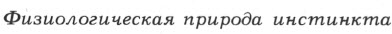
）里所作的；他写道，在达尔文的《人类和动物的表情》这本书里，幸运地把生理研究方法和历史方法配合起来，因为在把这两种方法结合在一起以后，它们就“使达尔文的研究天才获得巨大的力量”。弗罗洛夫证明说，达尔文对于那些伴随着各种不同情绪而出现的表情动作的本性方面的观点，整个是和巴甫洛夫学说互相符合的。现在就来作一个总结。达尔文的表情动作的学说，根据思想基础和它的唯物主义方向性说来，极其接近于巴甫洛夫生理学的基本思想。达尔文对于表情动作的反射本性的见解，使人可以从这样的角度上来正确提出表情动作的起源问题，就是可以用巴甫洛夫生理学从这个角度上去深入地和富于成效地精密研究。有用的联合性动作原理，是达尔文在表情动作的起源问题方面的理论见解的基础；可以整个把这个原理放到现代关于条件反射的学说的轨道上去。因此它也就显出是极其接近于巴甫洛夫对精神活动的起源与发展的看法了。
当然，从巴甫洛夫和他的学派的研究工作的观点看来，达尔文在这本书里所发展的这些对于人类的表情动作的起源和他们特有的情绪有联系的观点，虽然全部都具有重大的意义，但是犯了一个错误，就是：轻视了大脑皮质对于人类的各种特殊的情绪的发生和表现方面的作用。人类所特有的财富——第二信号系统——在和第一信号系统作着连续不断的相互作用和不可分割的统一，所以它对情绪的最后表达起有决定性的影响。正是因为这样，人类学会了怎样去控制自己的情绪：有时使这些情绪充分发挥出来，有时则抑制住它们的外部表现，依从时机的要求而决定。在达尔文的主张里，并没有反映出这种对情绪表现的问题的看法来，这也就是这个主张的意义狭小的原因之一。
至于说到达尔文用最细致的观察方法来获得的并且靠了广泛和很多通信者互相通信的办法而收集到的实际资料，那么现在就可以用新的资料来替换和补充它了。自从达尔文的这本书出版以后，已经积累了特别多的有关猿类的习性与表情动作的事实。这些事实是用更加完善的方法来获得的：一部分是在天然条件下，另一部分是在实验条件下，而且广泛采用了照相和电影拍摄的方法来获得的。苏联科学家拉德吉娜—科特斯（Н. Н. ）在黑猩猩（ ）方面获得了特别宝贵的资料。她的一极有趣的含有丰富的事实的专门著作《黑猩猩的孩子和人类的孩子》（
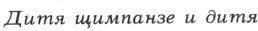
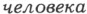
），就是对达尔文的《人类和动物的表情》这本书的极其宝贵的补充资料。达尔文只能够去想象到这样精密地作出的关于黑猩猩的表情动作和表情的记载，因为这些记载会使他获得更加精密得多的可靠的分析上的资料。在其他的苏联科学家——沃伊托尼斯（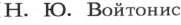
）、瓦楚罗（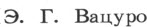
）等——的著作里，也包含有不少关于猿类的宝贵资料，不过这些科学家还没有去把表情动作当做自己的专门研究工作的对象。巴甫洛夫学说对于生理学的发展作了强有力的推动；只有进化生理学才能把各种动物的情绪起源问题的解决办法提到更高的理论水平上，并且从进化观点去查明情绪和它们的外部表现的联系的生理机制。只有采取这条路线，方才可能进一步去加深和发展达尔文在研究表情的问题方面所作出的一切结论。
在比较后不久，由于苏联神经病理学家谢普（ ）的研究著作的发表，达尔文的主张又在某一个问题上获得了支持。谢普根据“达尔文在他的关于动物和人类的表情动作的著作里，卓越地说明了关于眼睛在哭泣和发笑时候紧紧眯细具有预防意义的问题”这一个说法，就去对某些和一定肌肉群的收缩有联系的表情动作、对于脑部血液循环的影响方面，作了更加详细的分析。谢普企图证明，很多参加哭泣动作、皱眉、集中注意力等方面的表情肌的收缩，具有一定的生物学上的意义，同时对于脑部血液循环创设了良好的条件（在本书后面的俄文译者的附注里，可以看到更加详细的说明）。谢普的见解虽然在实际方面也是缺少充分的论据，却是相当重要的，因为如果证实了这些见解，那么它们就会去补充说明很多表情动作的直接在生理上的意义，因此也可以使达尔文所发表的几个作为假设形式的思想得到进一步的发展。
因此，我们可以看出，我们国家的科学，是和外国的科学不同的，它对情绪和表情动作的问题，作了最深入的创造性研究。达尔文的有些思想已经得到证实，还有一些思想则受到了深刻的批判，而且显然无疑的是：从巴甫洛夫学说的立场来进一步发展这个科学部门，将会得出更加多的重要而且宝贵的成果来。
5．达尔文关于表情的主张的优点和缺点
应当认为，达尔文的不可争辩的历史功绩，就在于他确定了动物和人类的各种不同的情绪方面所特有的表情动作在发生上具有共同的根源。这种共同性的证明，就是达尔文关于有机界的发展的学说的重要确证，而且首先是他关于人类起源于低等动物类型的学说的重要确证。达尔文正是为了这个目的，用他所特有的一切精密性，去收集大量有关动物和人类的表情方面的事实和观察，并且把它们分类。应当特别着重地指出，达尔文同时企图要用新的重要的论据，去加强一切人种团结一致的先进思想；他经常不变地用一种相信自己正确的科学家的顽强性和坚决心，去卫护这种思想。
达尔文对问题作了整个又深入又广泛的研究，抱有明显的唯物主义的意图，在这个复杂的研究工作方面提出了一系列大有成效的科学假设。在这方面，达尔文关于表情的著作不仅具有重要的历史意义，而且即使到现在也仍旧保持着它的重大意义。
可是，我们在着重指出达尔文的这个确实无疑的功绩时候，也应该同时清楚地想象到达尔文的主张的缺点方面；特别是在他对人类的表情动作的发生这个问题的解释方面具有缺点。这些缺点方面，并不限定于上面已经讲到过的他的生理学解释的某些具体缺陷，而是具有深刻的方法论上的根源。
达尔文没有成功地创立出一种能够去解释人类所特有的情绪的起源和发展的完备的理论来。可以用下面的话来说明这一点。那些对人类最有特征性的情绪，是和人类的社会劳动活动有联系的，因为这种活动是在全部人类历史发展的遥远道路上形成的。从辩证的历史唯物主义观点看来，任何一种对于人类情绪生活的生物学解释，如果脱离开了它所能理解的范围，并且硬要去完全解决问题，而不是局部解决问题，那么就绝不会使人认为是满意的。在达尔文的这本书里，丝毫都没有讲述到主要的一点，就是人类情绪的社会根源。达尔文只看到了问题的一方面；而另一个对于理解人类情绪起源的最重要的方面，却没有被他注意到。在达尔文的这本书里，并没有反映出“劳动创造人类”这个公式所表明的真理的基本重要性。因此，达尔文对那些快乐、不满、憎恨、轻视、厌恶、自觉有罪、惊奇、羞耻等情绪的外部表现所作的叙述，就显得贫乏和片面。虽然达尔文在细节的描写方面非常细致，他所表现的观察力非常惊人，还有他的很多解释十分聪明，但是他的眼光却显得太狭窄，因此这种情况也就成为一种对他所提出的问题的充分而周到的说明方面的主要障碍。达尔文想用生物学方法去解决这个属于人类方面的问题，想消灭人类和动物之间的性质上的界线；这种错误的企图，正像他的关于人类起源的著作里所清楚地表现出来的企图一样，也在这本关于表情的书里充分地反映出来。
不能反驳的情形是：在找寻人类情绪的发生上的根源时候，要去注意到饥饿、自卫、繁殖等本能。可是应当记住，从上述的本能所产生的情绪的初期类型开始，直到那些和人类的认识活动与实践活动有关的典型的人类情绪为止，要通过一条漫长的人类历史发展路线。在这里，可以恰当地用马克思的话来说：“……只有靠了（物象上）客观上展开的、人类实体的财富，才能够产生出主观的人类的感性的财富，产生出能够欣赏音乐的耳朵、能够理解形态的美观的眼睛——总之，人类的能够享受的感觉，那些被肯定是人类的重要的力量的感觉，一部分首先产生出来，一部分则发展下去。不仅是普通的五种感觉，而且也是所谓精神上的感觉、实际的感觉（意志、爱情等），总之是人类的感觉、感觉器官的人情，只是由于它们的对象的存在，由于人化的本性，方才发生出来。五种感觉的形成，这就是全部世界史的产物。” (14)
因此，人类的情绪和他的活动有最密切的联系，首先决定于社会历史条件、人类的社会劳动活动。人类亲自参加劳动；他在劳动里展开了自己的体力和精力的一切财富和多样性。在人类的创造性活动里，他的认识力、他的意志、他的感情就互相融合在一起。列宁曾写到“……如果没有‘人类的情绪’，那么绝不会而且不可能有人类对真理的追求”的时候， (15) 他所指的就是这样的热情，人类就把这种热情投进到自己为实现一定的理想而作的斗争里去。当巴甫洛夫写到“科学要求人们鼓足干劲和拿出伟大的热情来。你们要热烈地工作，热烈地追求真理”的时候， (16) 他也表明出了同样的思想来。
人类情绪的全部财富，从最简单的原始的情绪开始，一直到那些丰富而复杂的、不断地和人的意识交织在一起的、使人整个对自己的一切想法和意图专心一致的情绪（例如苏联人对自己祖国和自己人民的热爱的感情）为止，只有在我们从马克思列宁主义科学的立场上去研究人类的情形下，方才会被我们理解到。人类的语言、意识和情绪生活被交织成为整个一团，彼此有不可分割的联系，因此，斯大林的天才著作《马克思主义与语言学问题》里所发表的最深刻的思想，对于研究情绪问题方面具有十分重要的意义。
С. Г. 格列尔斯坦
————————————————————
(1) 莱奥纳多·达·芬奇：《莱奥纳多·达·芬奇选集》，第2卷，第170页，1905年。
(2) 可惜，直到现在为止，动物的表情要比人类的表情更少得到人们的应有的重视，所以这个问题决没有被人好好研究过。——谢切诺夫的原注。
(3) 谢切诺夫：《神经系统生理学》，圣彼得堡，第483—487页。重点是本文作者所加。
(4) 这是简称，按照后面一章，则全称应该是“由于神经系统的构造而引起的、起初就不依存于意志、而且在某种程度上不依存于习惯的作用原理”（The principle of actions due to the constitution of the Nervous System，independently the first of the Will，and independently to a certain extent of Habit）；或者简称“神经系统的直接作用原理”（The principle of the direct action of the nervous system）。——译者注
(5) 培恩：论达尔文的《人类和动物的表情》（这位著者的《感觉和智力》这本书里的附录，第一版，1874年；又第四版，1894年）。
(6) 谢切诺夫：谁去研究和如何研究心理学（《谢切诺夫全集》，第1卷，苏联科学院出版社，1952年，第209页）。
(7) 季米里亚捷夫：查理士·达尔文的生平简述（《季米里亚捷夫全集》，第7卷，莫斯科，1939年，第548页）。
(8) 冯德：《生理心理学基础》，俄译本编辑者克罗奇乌斯（
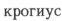
）、拉祖尔斯基（ ）和湼察也夫（ ），第3卷，第17章，第332—344页。(9) 巴甫洛夫：《巴甫洛夫全集》，第3卷，第2分册，1951年，第220—221页。
(10) 巴甫洛夫：《巴甫洛夫全集》，第3卷，第2分册，1951年，第214页和第243页。
(11) 上页到这里所用的巴甫洛夫的话，参见《巴甫洛夫全集》，第3卷，第2分册，第335、402、403、404、406页。
(12) 阿斯特瓦察土罗夫：《阿斯特瓦察土罗夫选集》，圣彼得堡，1939年。论文篇名；情绪的体质基础（
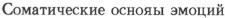
）和现代神经学关于情绪本质的资料（ ），第320—334页。(13) 奥西坡夫：《论情绪的生理上的起源》（
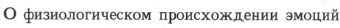
，登载在巴甫洛夫院士75岁纪念集里，第105—113页）；还有：《关于精神错乱状态的发生问题》（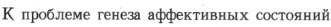
，基洛夫军医大学著作集，第1卷，圣彼得堡，1946年）。(14) 马克思：“神圣家族”一书的准备工作（《马克思恩格斯全集》，第3卷，第627页）。
(15) 列宁：对鲁巴庚的书“在书籍中间”的评论（《列宁全集》，第20卷，第237页）。
(16) 巴甫洛夫：给青年的一封信（《巴甫洛夫全集》，第1卷，1940年，第27—28页）。